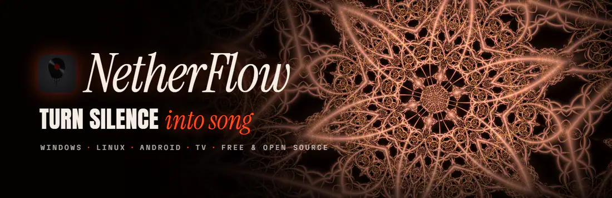
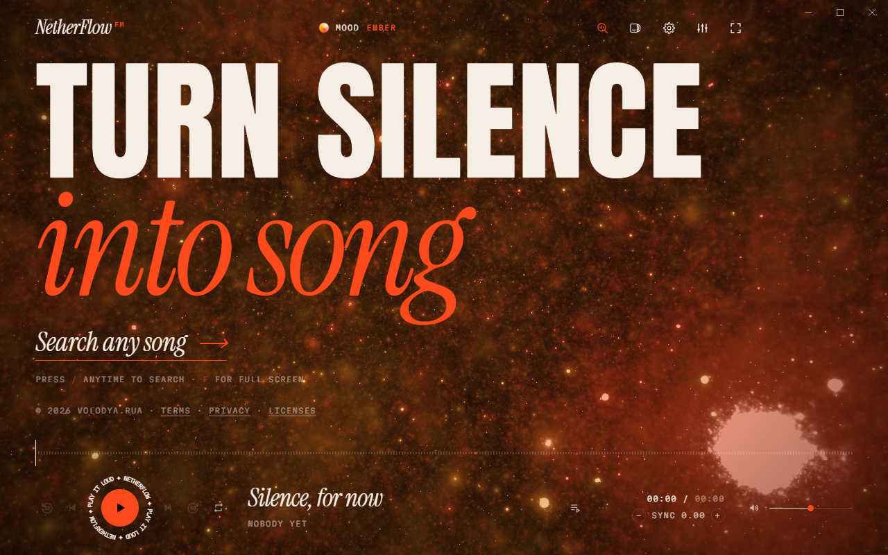
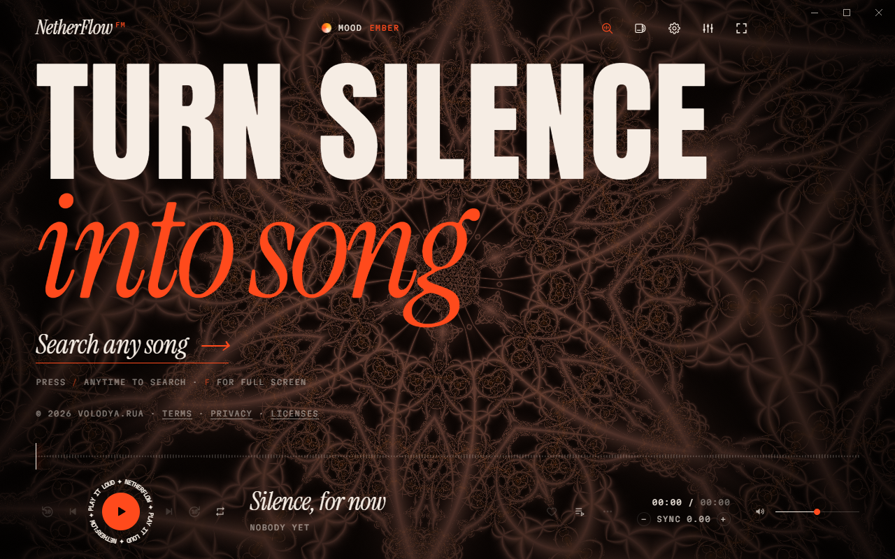

NetherFlow
A free music player for Windows and Android that turns any song into a whole vibe. Full songs, lyrics hitting word by word, and backgrounds that actually move with the music. No account, no ads, no tracking.

